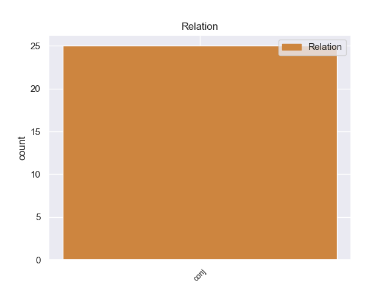
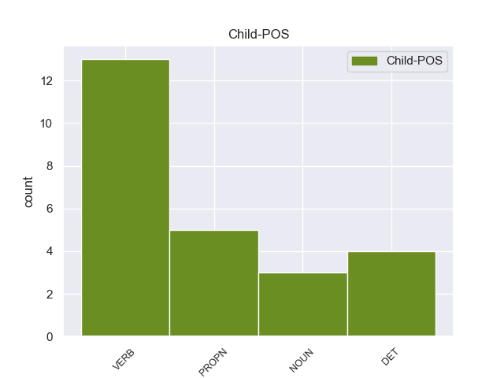

Distribution of features within this leaf



Agreement Rules sorted by frequency.
- When the dependent token is the conjunct(conj) of the head token, and the head token is VERB
1 Hemos _ _ _ _ 0 _ _ _
2 recibido _ _ _ _ 0 _ _ _
3 un _ _ _ _ 0 _ _ _
4 trato _ _ _ _ 0 _ _ _
5 excelente _ _ _ _ 0 _ _ _
6 y _ _ _ _ 0 _ _ _
7 nos _ _ _ _ 0 _ _ _
8 han han VERB _ Mood=Ind|Number=Sing|Person=3|Tense=Pres|VerbForm=Fin 9 conj _ _
9 gestionado gestionado VERB _ Mood=Ind|Number=Sing|Person=3|Tense=Pres|VerbForm=Fin 0 _ _ _
10 todos _ _ _ _ 0 _ _ _
11 los _ _ _ _ 0 _ _ _
12 trámites _ _ _ _ 0 _ _ _
13 para _ _ _ _ 0 _ _ _
14 montar _ _ _ _ 0 _ _ _
15 nuestra _ _ _ _ 0 _ _ _
16 empresa _ _ _ _ 0 _ _ _
17 en _ _ _ _ 0 _ _ _
18 un _ _ _ _ 0 _ _ _
19 tiempo _ _ _ _ 0 _ _ _
20 récord _ _ _ _ 0 _ _ _
21 . _ _ _ _ 0 _ _ _
1 La _ _ _ _ 0 _ _ _
2 ciudad _ _ _ _ 0 _ _ _
3 se _ _ _ _ 0 _ _ _
4 administra _ _ _ _ 0 _ _ _
5 mediante _ _ _ _ 0 _ _ _
6 un _ _ _ _ 0 _ _ _
7 alcalde _ _ _ _ 0 _ _ _
8 ( _ _ _ _ 0 _ _ _
9 mayor _ _ _ _ 0 _ _ _
10 ) _ _ _ _ 0 _ _ _
11 elegido _ _ _ _ 0 _ _ _
12 cada _ _ _ _ 0 _ _ _
13 cuatro _ _ _ _ 0 _ _ _
14 años _ _ _ _ 0 _ _ _
15 , _ _ _ _ 0 _ _ _
16 y _ _ _ _ 0 _ _ _
17 un _ _ _ _ 0 _ _ _
18 concejo _ _ _ _ 0 _ _ _
19 ( _ _ _ _ 0 _ _ _
20 Common _ _ _ _ 0 _ _ _
21 Council _ _ _ _ 0 _ _ _
22 ) _ _ _ _ 0 _ _ _
23 de _ _ _ _ 0 _ _ _
24 doce _ _ _ _ 0 _ _ _
25 miembros _ _ _ _ 0 _ _ _
26 ( _ _ _ _ 0 _ _ _
27 alderpersons _ _ _ _ 0 _ _ _
28 ) _ _ _ _ 0 _ _ _
29 elegidos _ _ _ _ 0 _ _ _
30 cada _ _ _ _ 0 _ _ _
31 dos _ _ _ _ 0 _ _ _
32 años _ _ _ _ 0 _ _ _
33 en _ _ _ _ 0 _ _ _
34 base _ _ _ _ 0 _ _ _
35 a _ _ _ _ 0 _ _ _
36 uno _ _ _ _ 0 _ _ _
37 por _ _ _ _ 0 _ _ _
38 cada _ _ _ _ 0 _ _ _
39 uno _ _ _ _ 0 _ _ _
40 de _ _ _ _ 0 _ _ _
41 los _ _ _ _ 0 _ _ _
42 doce _ _ _ _ 0 _ _ _
43 distritos distritos NOUN _ Mood=Ind|Number=Sing|Person=3|Tense=Past|VerbForm=Fin 0 _ _ _
44 electorales _ _ _ _ 0 _ _ _
45 municipales municipales PROPN _ Mood=Ind|Number=Sing|Person=3|Tense=Past|VerbForm=Fin 43 conj _ _
46 . _ _ _ _ 0 _ _ _
1 Fue _ _ _ _ 0 _ _ _
2 el _ _ _ _ 0 _ _ _
3 protagonista _ _ _ _ 0 _ _ _
4 de _ _ _ _ 0 _ _ _
5 el _ _ _ _ 0 _ _ _
6 primer _ _ _ _ 0 _ _ _
7 juego _ _ _ _ 0 _ _ _
8 de _ _ _ _ 0 _ _ _
9 la _ _ _ _ 0 _ _ _
10 franquicia franquicia PROPN _ Mood=Ind|Number=Sing|Person=3|Tense=Past|VerbForm=Fin 0 _ _ _
11 , _ _ _ _ 0 _ _ _
12 Fire _ _ _ _ 0 _ _ _
13 Emblem _ _ _ _ 0 _ _ _
14 : _ _ _ _ 0 _ _ _
15 Ankoku _ _ _ _ 0 _ _ _
16 Ryū _ _ _ _ 0 _ _ _
17 to _ _ _ _ 0 _ _ _
18 Hikari _ _ _ _ 0 _ _ _
19 no _ _ _ _ 0 _ _ _
20 Tsurugi _ _ _ _ 0 _ _ _
21 , _ _ _ _ 0 _ _ _
22 así _ _ _ _ 0 _ _ _
23 como _ _ _ _ 0 _ _ _
24 de _ _ _ _ 0 _ _ _
25 el _ _ _ _ 0 _ _ _
26 tercero _ _ _ _ 0 _ _ _
27 , _ _ _ _ 0 _ _ _
28 Fire _ _ _ _ 0 _ _ _
29 Emblem _ _ _ _ 0 _ _ _
30 : _ _ _ _ 0 _ _ _
31 Monshō _ _ _ _ 0 _ _ _
32 no _ _ _ _ 0 _ _ _
33 Nazo _ _ _ _ 0 _ _ _
34 y _ _ _ _ 0 _ _ _
35 en _ _ _ _ 0 _ _ _
36 el _ _ _ _ 0 _ _ _
37 remake _ _ _ _ 0 _ _ _
38 para _ _ _ _ 0 _ _ _
39 la _ _ _ _ 0 _ _ _
40 Nintendo _ _ _ _ 0 _ _ _
41 DS _ _ _ _ 0 _ _ _
42 Fire _ _ _ _ 0 _ _ _
43 Emblem _ _ _ _ 0 _ _ _
44 : _ _ _ _ 0 _ _ _
45 Shadow _ _ _ _ 0 _ _ _
46 Dragon _ _ _ _ 0 _ _ _
47 and _ _ _ _ 0 _ _ _
48 Fire _ _ _ _ 0 _ _ _
49 Emblem _ _ _ _ 0 _ _ _
50 : _ _ _ _ 0 _ _ _
51 Shin _ _ _ _ 0 _ _ _
52 Monshō _ _ _ _ 0 _ _ _
53 no _ _ _ _ 0 _ _ _
54 Nazo _ _ _ _ 0 _ _ _
55 : _ _ _ _ 0 _ _ _
56 Hikari _ _ _ _ 0 _ _ _
57 to _ _ _ _ 0 _ _ _
58 Kage _ _ _ _ 0 _ _ _
59 no _ _ _ _ 0 _ _ _
60 Eiyū eiyū PROPN _ Mood=Ind|Number=Sing|Person=3|Tense=Past|VerbForm=Fin 10 conj _ _
61 . _ _ _ _ 0 _ _ _
Disagree Examples:
1 El _ _ _ _ 0 _ _ _
2 castillo _ _ _ _ 0 _ _ _
3 de _ _ _ _ 0 _ _ _
4 Oropesa _ _ _ _ 0 _ _ _
5 data datar VERB _ Mood=Ind|Number=Sing|Person=3|Tense=Pres|VerbForm=Fin 0 _ _ _
6 de _ _ _ _ 0 _ _ _
7 los _ _ _ _ 0 _ _ _
8 siglos _ _ _ _ 0 _ _ _
9 XII _ _ _ _ 0 _ _ _
10 y _ _ _ _ 0 _ _ _
11 XIII _ _ _ _ 0 _ _ _
12 , _ _ _ _ 0 _ _ _
13 y _ _ _ _ 0 _ _ _
14 fue _ _ _ _ 0 _ _ _
15 construido construir VERB _ Gender=Masc|Number=Sing|Tense=Past|VerbForm=Part 5 conj _ _
16 por _ _ _ _ 0 _ _ _
17 los _ _ _ _ 0 _ _ _
18 árabes _ _ _ _ 0 _ _ _
19 probablemente _ _ _ _ 0 _ _ _
20 sobre _ _ _ _ 0 _ _ _
21 una _ _ _ _ 0 _ _ _
22 construcción _ _ _ _ 0 _ _ _
23 romana _ _ _ _ 0 _ _ _
24 anterior _ _ _ _ 0 _ _ _
25 . _ _ _ _ 0 _ _ _
1 El _ _ _ _ 0 _ _ _
2 comodoro _ _ _ _ 0 _ _ _
3 Norringtton _ _ _ _ 0 _ _ _
4 ve _ _ _ _ 0 _ _ _
5 horrorizado _ _ _ _ 0 _ _ _
6 cómo _ _ _ _ 0 _ _ _
7 su _ _ _ _ 0 _ _ _
8 amada _ _ _ _ 0 _ _ _
9 ha _ _ _ _ 0 _ _ _
10 caído caer VERB _ Gender=Masc|Number=Sing|Tense=Past|VerbForm=Part 0 _ _ _
11 pero _ _ _ _ 0 _ _ _
12 la _ _ _ _ 0 _ _ _
13 altura _ _ _ _ 0 _ _ _
14 de _ _ _ _ 0 _ _ _
15 el _ _ _ _ 0 _ _ _
16 acantilado _ _ _ _ 0 _ _ _
17 y _ _ _ _ 0 _ _ _
18 las _ _ _ _ 0 _ _ _
19 rocas _ _ _ _ 0 _ _ _
20 , _ _ _ _ 0 _ _ _
21 que _ _ _ _ 0 _ _ _
22 milagrosamente _ _ _ _ 0 _ _ _
23 Elizabeth _ _ _ _ 0 _ _ _
24 ha _ _ _ _ 0 _ _ _
25 esquivado _ _ _ _ 0 _ _ _
26 , _ _ _ _ 0 _ _ _
27 le _ _ _ _ 0 _ _ _
28 hacen hacer VERB _ Mood=Ind|Number=Plur|Person=3|Tense=Pres|VerbForm=Fin 10 conj _ _
29 desistir _ _ _ _ 0 _ _ _
30 de _ _ _ _ 0 _ _ _
31 su _ _ _ _ 0 _ _ _
32 empeño _ _ _ _ 0 _ _ _
33 de _ _ _ _ 0 _ _ _
34 lanzar _ _ _ _ 0 _ _ _
35 se _ _ _ _ 0 _ _ _
36 desde _ _ _ _ 0 _ _ _
37 ahí _ _ _ _ 0 _ _ _
38 , _ _ _ _ 0 _ _ _
39 y _ _ _ _ 0 _ _ _
40 prefiere _ _ _ _ 0 _ _ _
41 correr _ _ _ _ 0 _ _ _
42 hasta _ _ _ _ 0 _ _ _
43 el _ _ _ _ 0 _ _ _
44 puerto _ _ _ _ 0 _ _ _
45 con _ _ _ _ 0 _ _ _
46 sus _ _ _ _ 0 _ _ _
47 hombres _ _ _ _ 0 _ _ _
48 . _ _ _ _ 0 _ _ _
1 Ya _ _ _ _ 0 _ _ _
2 en _ _ _ _ 0 _ _ _
3 2003 _ _ _ _ 0 _ _ _
4 Borja _ _ _ _ 0 _ _ _
5 abandona abandonar VERB _ Mood=Ind|Number=Sing|Person=3|Tense=Pres|VerbForm=Fin 0 _ _ _
6 el _ _ _ _ 0 _ _ _
7 grupo _ _ _ _ 0 _ _ _
8 y _ _ _ _ 0 _ _ _
9 es _ _ _ _ 0 _ _ _
10 sustituido sustituir VERB _ Gender=Masc|Number=Sing|Tense=Past|VerbForm=Part 5 conj _ _
11 por _ _ _ _ 0 _ _ _
12 Ínigo _ _ _ _ 0 _ _ _
13 Coppel _ _ _ _ 0 _ _ _
14 ( _ _ _ _ 0 _ _ _
15 ahora _ _ _ _ 0 _ _ _
16 en _ _ _ _ 0 _ _ _
17 solitario _ _ _ _ 0 _ _ _
18 como _ _ _ _ 0 _ _ _
19 Coppel _ _ _ _ 0 _ _ _
20 ) _ _ _ _ 0 _ _ _
21 . _ _ _ _ 0 _ _ _
1 Una _ _ _ _ 0 _ _ _
2 vez _ _ _ _ 0 _ _ _
3 en _ _ _ _ 0 _ _ _
4 casa _ _ _ _ 0 _ _ _
5 , _ _ _ _ 0 _ _ _
6 los _ _ _ _ 0 _ _ _
7 padres _ _ _ _ 0 _ _ _
8 de _ _ _ _ 0 _ _ _
9 Coraline _ _ _ _ 0 _ _ _
10 nunca _ _ _ _ 0 _ _ _
11 se _ _ _ _ 0 _ _ _
12 presentan _ _ _ _ 0 _ _ _
13 y _ _ _ _ 0 _ _ _
14 el _ _ _ _ 0 _ _ _
15 gato _ _ _ _ 0 _ _ _
16 le _ _ _ _ 0 _ _ _
17 muestra _ _ _ _ 0 _ _ _
18 vía _ _ _ _ 0 _ _ _
19 espejo _ _ _ _ 0 _ _ _
20 que _ _ _ _ 0 _ _ _
21 sus _ _ _ _ 0 _ _ _
22 padres _ _ _ _ 0 _ _ _
23 han han NOUN _ Mood=Ind|Number=Sing|Person=3|Tense=Pres|VerbForm=Fin 25 conj _ _
24 sido _ _ _ _ 0 _ _ _
25 secuestrados secuestrados VERB _ Mood=Ind|Number=Sing|Person=3|Tense=Past|VerbForm=Fin 0 _ _ _
26 por _ _ _ _ 0 _ _ _
27 la _ _ _ _ 0 _ _ _
28 otra _ _ _ _ 0 _ _ _
29 madre _ _ _ _ 0 _ _ _
30 en _ _ _ _ 0 _ _ _
31 castigo _ _ _ _ 0 _ _ _
32 por _ _ _ _ 0 _ _ _
33 rehusar _ _ _ _ 0 _ _ _
34 se _ _ _ _ 0 _ _ _
35 a _ _ _ _ 0 _ _ _
36 vivir _ _ _ _ 0 _ _ _
37 con _ _ _ _ 0 _ _ _
38 ella _ _ _ _ 0 _ _ _
39 . _ _ _ _ 0 _ _ _
1 Se _ _ _ _ 0 _ _ _
2 subdividen subdividen NOUN _ Mood=Ind|Number=Sing|Person=3|Tense=Past|VerbForm=Fin 0 _ _ _
3 en _ _ _ _ 0 _ _ _
4 tres _ _ _ _ 0 _ _ _
5 tribus _ _ _ _ 0 _ _ _
6 : _ _ _ _ 0 _ _ _
7 hanaleti hanaleti PROPN _ Mood=Ind|Number=Sing|Person=3|Tense=Pres|VerbForm=Fin 2 conj _ _
8 , _ _ _ _ 0 _ _ _
9 panalu _ _ _ _ 0 _ _ _
10 y _ _ _ _ 0 _ _ _
11 welmti _ _ _ _ 0 _ _ _
12 . _ _ _ _ 0 _ _ _